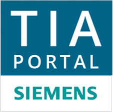
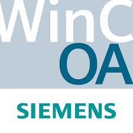
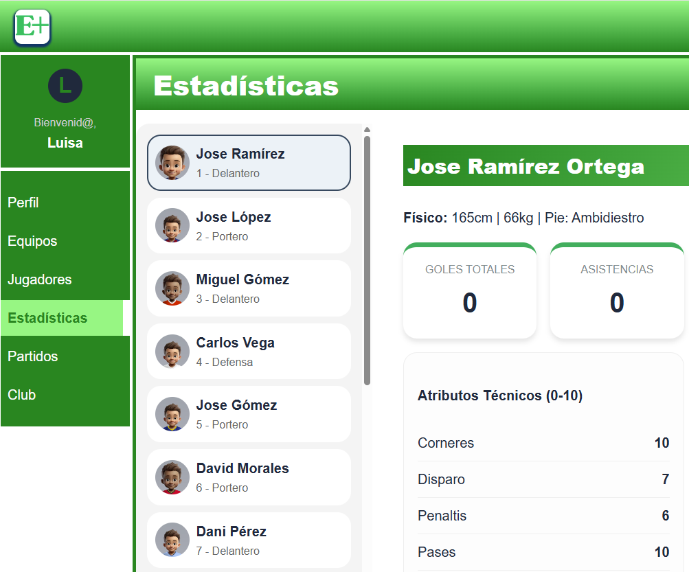

Perfil Profesional
Software Engineer | Full-Stack Developer con más de 20 años de experiencia desarrollando interfaces críticas donde la usabilidad (UX/UI) y fiabilidad son la prioridad. Especialista en la integración de tecnologías web modernas (HTML, JavaScript, CSS) en entornos de automatización industrial (PLC y HMI Siemens) y sistemas de control.
Mi enfoque se centra en la optimización de procesos mediante software personalizado. Un ejemplo clave es el desarrollo de una interfaz en JS que logró reducir en un 90% el tiempo de auditoría manual de versiones en sistemas industriales.
Desarrollo Full-Stack
Creación de aplicaciones web dinámicas integrando Frontend y Backend. Dominio de frameworks modernos como Vue.js, Next.js y React.js, con despliegue escalable en la nube mediante AWS
Software & Automatización
Sólida base en lógica de programación orientada a objetos en PLC (SCL Siemens) y desarrollo de HMI. Experto en identificación y corrección de errores críticos y optimización de código para alta disponibilidad.
Gestión de Datos
Diseño e implementación de bases de datos relacionales y no relacionales. Experiencia en MySQL y MongoDB, gestionando desde el modelo lógico hasta la implementación física.
Metodologías ágiles
Gestión de proyectos y trabajo colaborativo bajo metodología Scrum. Uso profesional de herramientas de seguimiento y control de versiones como Jira, Kanban y GitHub
Resumen
Formación Académica
-
Grado Superior en Desarrollo de Aplicaciones Web (DAW)
(Cursando 2º curso) | I.E.S. Ramón Esteve | Catadau- Desarrollo Full-Stack: Programación Frontend y Backend, creación y consumo de APIs, y gestión de lenguajes de marcas.
- Bases de Datos: Diseño de modelos Entidad/Relación y despliegue de bases de datos relacionales (SQL) y no relacionales (MongoDB).
- Infraestructura y Cloud: Administración de servidores en AWS (instancias, redes virtuales y seguridad), máquinas virtuales y entornos Ubuntu.
- Metodologías y Herramientas: Trabajo bajo metodologías ágiles (Scrum, Kanban) utilizando Jira y control de versiones avanzado con GitHub.
- Soft Skills e Idiomas: Inglés nivel B2 y sostenibilidad aplicada al desarrollo de software.
-
Grado Superior en Instalaciones Electrotécnicas
2006 - 2008 | I.E.S. Albal | Albal- Automatización avanzada: Programación y comunicaciones industriales con Siemens (S7-300, S7-200) y sistemas SCADA WinCC.
- Proyectos técnicos: Cálculos, memorias técnicas y diseño de sistemas de regulación y domótica industrial.
-
Grado Superior en Sistemas Regulación y Control Automáticos
2000 - 2002 | I.E.S. Salvador Gadea | Aldaia- Lógica de programación: Desarrollo en C++ y control de procesos en tiempo real mediante software SCADA.
- Sistemas industriales: Programación de autómatas, terminales táctiles (HMI) y diseño de automatismos eléctricos.
-
Técnico Especialista Electrónica FPI-FPII
1995 - 2001 | Academia ECC | EE.PP. Artesanos | Valencia- Bases de computación: Programación en C++, Lenguaje Ensamblador y Teoría de Sistemas Informáticos.
- Hardware: Programación de microcontroladores PIC y diseño de circuitos electrónicos complejos.
Experiencia Profesional
-
ELECTRIC AUTOMATION NETWORK | Full-Stack Developer
2026 - Actualidad- Desarrollo de interfaces dinámicas con React.js, Next.js y TypeScript, optimizando componentes de búsqueda y navegación.
- Creación de herramientas de automatización en Python para procesamiento de datos, logrando reducir la auditoría manual en un 95%.
- Arquitectura de API Multi-Base de Datos & Auth: FastAPI Starter Kit con Python, validación de datos con Pydantic. Operar dinámicamente con PostgreSQL, MySQL y MongoDB. Capa de Caché y seguridad con JWT integrada con Redis (Docker).
-
ISTOBAL | Desarrollo de Software e I+D
2008 - 2025- Desarrollo HMI y Web: Creación de interfaces con JS, HTML y CSS, optimizando la experiencia de usuario en maquinaria industrial.
- Programación PLC: Lógica compleja en SCL (Siemens) bajo paradigmas de programación orientada a objetos.
- Calidad y Gestión: Resolución de incidencias críticas internacionales bajo metodología Scrum e integración continua.
- Evolución constante y liderazgo en proyectos clave de software.
-
FREIREMAR | MARTEN | CABYCAL
2003 - 2008- Programador de Sistemas de Control: Diseño y puesta en marcha de lógica para PLC y terminales HMI en sistemas automatizados complejos[cite: 78].
- Supervisión de montaje y configuración de cuadros eléctricos de potencia y control.
-
NORAUTO | Mecánico y Electricista
2000 - 2003- Mecánica y electricidad avanzada del automóvil.
Stack Tecnológico
Dominio de herramientas modernas para soluciones industriales y digitales.


Proyectos Destacados
Soluciones digitales que combinan lógica de programación avanzada, consumo de APIs y despliegue en la nube.

TecnoPLC.com | Plataforma Técnica
2015 - Actualidad- Desarrollo CMS: Personalización avanzada de WordPress mediante PHP, HTML5 y CSS3.
- Arquitectura: Gestión integral de hosting, bases de datos y optimización de rendimiento (WPO).
- SEO & Contenido: Posicionamiento de marca técnica con más de 10 años de vigencia en el sector industrial.

Star Wars Explorer (API Rest)
2025- Consumo de API: Implementación de Fetch API para extracción y filtrado dinámico de datos JSON.
- Interactividad: Sistema de búsqueda predictiva y filtrado por categorías (personajes, naves, planetas).
- UI Dinámica: Renderizado de componentes mediante JavaScript asíncrono y CSS Grid.

Weather App (Axios & API Rest)
2025- Consumo Avanzado: Implementación de Axios API para peticiones asíncronas y gestión dinámica de promesas JSON.
- Lógica de Programación: Uso de localStorage para persistencia de datos y delegación de eventos para optimizar el rendimiento del DOM.
- UX/UI: Construcción dinámica de URLs mediante Template Strings y renderizado de datos climáticos en tiempo real.

Personal Portfolio & Brand
2025 - Actualidad- Desarrollo Frontend: Arquitectura basada en componentes limpios utilizando HTML5 Semántico, CSS3 avanzado y JavaScript.
- Diseño Responsive: Implementación de estrategias Mobile-First para una visualización óptima en cualquier dispositivo.
- Optimización: Estructura enfocada al rendimiento, accesibilidad y una experiencia de usuario (UX) profesional y directa.

Open Source & Engineering Labs
Repositorios Activos en GitHub- Backend & Arquitectura: Desarrollo de Starter Kits en FastAPI bajo Clean Architecture, integración de JWT, Redis Cache y gestión asíncrona de bases de datos.
- Automatización Industrial: Scripts de Web Scraping en Python para auditoría de datos técnicos, optimizando procesos con un 95% de ahorro de tiempo.
- Ecosistema Full-Stack: Proyectos que abarcan desde el consumo de APIs REST hasta la implementación de lógica compleja en el cliente y persistencia de datos.

Entrena+ | Gestión Deportiva
2026 - Proyecto Final DAW- Arquitectura Full-Stack: SPA con Vue.js 3 y Backend en PHP 8.x bajo arquitectura de servicios y Repository Pattern.
- Base de Datos Relacional: Diseño íntegro de esquema en MySQL, optimización mediante procedimientos almacenados.
- Seguridad & Estado: Autenticación JWT, middlewares de control de acceso y gestión de estado reactivo con Pinia en LocalStorage.

Contacto
📲
647554069
🌍
Alfarp (Valencia)
📧
geletesan@hotmail.com
✅
Hire Available